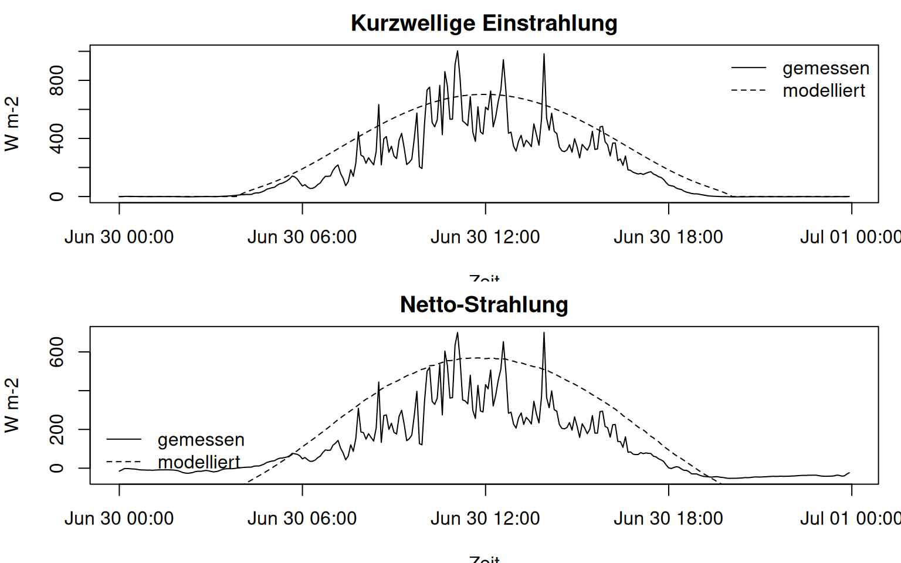
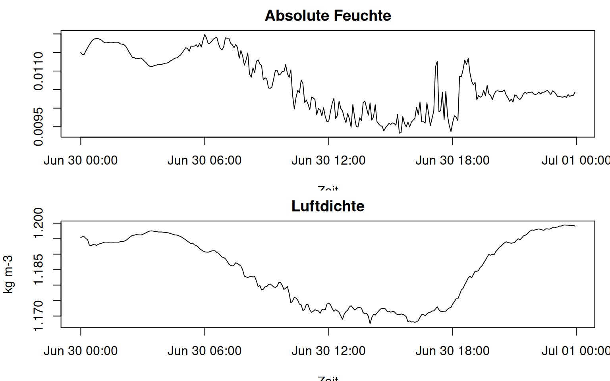
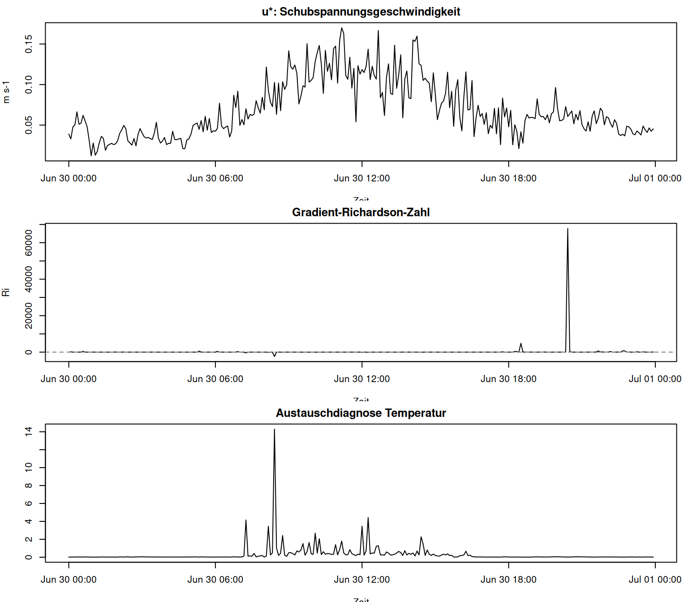
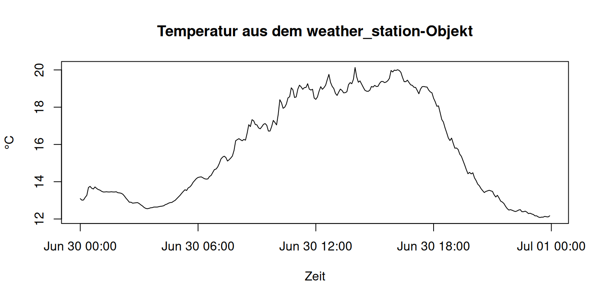

#> Q_star B A
#> Min. :-52.36 Min. :-0.75577 Min. :-56.84
#> 1st Qu.:-17.43 1st Qu.: 0.02899 1st Qu.:-17.75
#> Median : 48.34 Median : 1.55380 Median : 47.75
#> Mean :110.84 Mean : 2.14723 Mean :108.69
#> 3rd Qu.:215.55 3rd Qu.: 4.48683 3rd Qu.:210.15
#> Max. :700.70 Max. : 5.59189 Max. :698.25Ziel dieser Kurseinheit
Diese Einheit stellt fieldClim als Arbeitswerkzeug in den Mittelpunkt. Die Theorie ist bekannt, die Datenprüfung ist erfolgt. Jetzt geht es um die eigentliche Paketlogik: Messspalten, Standort, Oberflächenannahmen und Messhöhen werden in ein weather_station-Objekt übersetzt und danach mit Paketfunktionen ausgewertet.
Das Objekt ist der Kern des Workflows. Es sorgt dafür, dass Strahlung, Boden, Feuchte, Druck, Temperatur, Windprofil und Stabilitätsdiagnosen dieselbe Datengrundlage verwenden. Genau hier entsteht die praktische Verbindung zwischen Klimastation und Modellanwendung.
HinweisArbeitsprinzip in R
Der Code bleibt absichtlich einfach. Wir verwenden read.csv(), direkte Spaltenzugriffe mit $, kleine data.frame()-Tabellen und base-R-Plots. Das Ziel ist nicht ein eleganter R-Stil, sondern eine nachvollziehbare Übersetzung von Stationsdaten in fieldClim-Berechnungen. Pfade laufen über here::here(). Wenn die Kursdatei data/caldern_wiese_2017-06-30.csv nicht vorhanden ist, nutzt der Code als Fallback die mit dem Paket ausgelieferte Beispieldatei.
Arbeitsgrößen vorbereiten
Wir übernehmen in dieser Einheit die Arbeitsentscheidung aus der Datenprüfung: rad_net wird als Q_star verwendet und heatflux_soil als B. Die Alternativen aus den Strahlungskomponenten bleiben Diagnosegrößen, aber sie ersetzen nicht still die Messspalte.
Das Stationsobjekt bauen
Der folgende Chunk ist der wichtigste technische Schritt. Er ist bewusst ausgeschrieben. Man soll sehen, welche Messspalte welche Rolle bekommt. Für eine Lehreinheit ist das besser als eine stark verkürzte Hilfsfunktion, weil genau in dieser Zuordnung die meisten fachlichen Fehler entstehen.
#> [1] "weather_station"
#> [1] "datetime" "lon" "lat" "elev" "temp"
#> [6] "rh" "t1" "t2" "hum1" "hum2"
#> [11] "v1" "v2" "z1" "z2" "rad_bal"
#> [16] "soil_flux" "slope" "exposition" "valley" "surface_type"
#> [21] "surface_temp" "texture" "moisture" "soil_temp1" "soil_temp2"
#> [26] "soil_depth1" "soil_depth2" "obs_height"
#> datetime lon lat elev temp rh t1 t2 hum1 hum2
#> 1 2017-06-30 00:00:00 8.6832 50.8405 261 13.09 100.0 13.09 13.60 100.0 97.6
#> 2 2017-06-30 00:05:00 8.6832 50.8405 261 13.01 100.0 13.01 13.51 100.0 97.7
#> 3 2017-06-30 00:10:00 8.6832 50.8405 261 13.02 100.0 13.02 13.66 100.0 96.5
#> 4 2017-06-30 00:15:00 8.6832 50.8405 261 13.16 100.0 13.16 13.76 100.0 96.1
#> 5 2017-06-30 00:20:00 8.6832 50.8405 261 13.27 100.0 13.27 13.80 100.0 96.4
#> 6 2017-06-30 00:25:00 8.6832 50.8405 261 13.69 98.1 13.69 14.25 98.1 92.4
#> v1 v2 z1 z2 rad_bal soil_flux slope exposition valley surface_type
#> 1 0.448 0.529 2 10 -15.200 1.551533 0 0 FALSE field
#> 2 0.380 0.409 2 10 -8.920 1.492695 0 0 FALSE field
#> 3 0.548 0.670 2 10 -1.965 1.448708 0 0 FALSE field
#> 4 0.581 0.658 2 10 -1.790 1.390439 0 0 FALSE field
#> 5 0.764 0.887 2 10 -2.469 1.325316 0 0 FALSE field
#> 6 0.589 0.744 2 10 -3.857 1.268762 0 0 FALSE field
#> surface_temp texture moisture soil_temp1 soil_temp2 soil_depth1 soil_depth2
#> 1 16.31 peat 0.344 16.31 13.09 0.25 0
#> 2 16.29 peat 0.344 16.29 13.01 0.25 0
#> 3 16.25 peat 0.344 16.25 13.02 0.25 0
#> 4 16.25 peat 0.344 16.25 13.16 0.25 0
#> 5 16.22 peat 0.344 16.22 13.27 0.25 0
#> 6 16.19 peat 0.344 16.19 13.69 0.25 0
#> obs_height
#> 1 2
#> 2 2
#> 3 2
#> 4 2
#> 5 2
#> 6 2Das Objekt trägt zwei Arten von Information. Erstens enthält es Messwerte: Temperatur, Feuchte, Wind, Strahlung, Bodenwärmestrom. Zweitens enthält es Annahmen: Oberflächentyp, Messhöhen, Standort, Hangneigung, Exposition, Bodenart und Beobachtungshöhe. Beide Gruppen sind methodisch relevant.
Eingaben inspizieren
Bevor Wärmeflussmethoden laufen, muss geprüft werden, welche Eingaben vollständig vorhanden sind. inspect_weather_station_inputs() repariert keine Daten. Die Funktion meldet, welche Felder vorhanden sind, wo Lücken liegen und welche Methodenfamilien aus Eingabesicht bereit sind.
#> [1] "fields" "gaps" "method_readiness" "qc_flags"
#> [5] "guidance" "summary"
#> $n_fields
#> [1] 42
#>
#> $n_missing_fields
#> [1] 14
#>
#> $n_partial_fields
#> [1] 0
#>
#> $n_gaps
#> [1] 0
#>
#> $n_qc_flags
#> [1] 0
#>
#> $ready_methods
#> [1] "priestley_taylor" "bulk_residual" "bulk_residual_ri_guard"
#> [4] "bowen" "monin_profile" "penman"
#>
#> $blocked_methods
#> character(0)
#>
#> $unsafe_missing_fields
#> character(0)
#> field present all_missing any_missing n_missing n_total
#> 6 rad_net FALSE TRUE TRUE 0 0
#> 7 rad_sw_in FALSE TRUE TRUE 0 0
#> 8 rad_sw_out FALSE TRUE TRUE 0 0
#> 9 rad_lw_in FALSE TRUE TRUE 0 0
#> 10 rad_lw_out FALSE TRUE TRUE 0 0
#> 11 albedo FALSE TRUE TRUE 0 0
#> 22 thermal_cond FALSE TRUE TRUE 0 0
#> 28 vapour_pressure FALSE TRUE TRUE 0 0
#> 29 vapor_pressure FALSE TRUE TRUE 0 0
#> 30 absolute_humidity FALSE TRUE TRUE 0 0
#> 31 specific_humidity FALSE TRUE TRUE 0 0
#> 32 pressure FALSE TRUE TRUE 0 0
#> 36 potential_temperature FALSE TRUE TRUE 0 0
#> 39 wind_dir FALSE TRUE TRUE 0 0
#> missing_fraction source_status group variable_type
#> 6 NA missing radiation radiation
#> 7 NA missing radiation radiation
#> 8 NA missing radiation radiation
#> 9 NA missing radiation radiation
#> 10 NA missing radiation radiation
#> 11 NA missing radiation radiation
#> 22 NA missing soil soil thermal property
#> 28 NA missing humidity humidity
#> 29 NA missing humidity humidity
#> 30 NA missing humidity humidity
#> 31 NA missing humidity humidity
#> 32 NA missing pressure pressure
#> 36 NA missing profiles temperature
#> 39 NA missing profiles wind direction
#> method missing_fields partial_fields ready
#> 1 priestley_taylor TRUE
#> 2 bulk_residual TRUE
#> 3 bulk_residual_ri_guard TRUE
#> 4 bowen TRUE
#> 5 monin_profile TRUE
#> 6 penman TRUE
#> notes
#> 1 Requires available measured input fields for temperature, net radiation, soil heat flux and surface type.
#> 2 Neutral bulk path can use v1 only; v2 is optional for mean wind.
#> 3 Optional Richardson guard requires v2 and remains unavailable when v2 is missing.
#> 4 Requires two-level temperature and humidity profiles.
#> 5 Requires profile inputs plus either surface_type or obs_height.
#> 6 Uses hum1 when present, otherwise rh; both are interpreted as relative humidity percent.Die Funktion ist ein Kontrollpunkt, keine Freigabe. Wenn eine Methode „ready“ ist, bedeutet das: Die benötigten Felder sind strukturell vorhanden. Es bedeutet nicht automatisch, dass jeder Zeitschritt meteorologisch gut konditioniert ist. Das wird erst durch Stabilitäts- und Ergebnisdiagnosen sichtbar.
Modellierte Strahlung als Plausibilitätsmaßstab
fieldClim enthält Funktionen, um Strahlung aus Zeit, Standort, Gelände und Oberflächenannahmen zu modellieren. In dieser Kurseinheit wird das nicht als Ersatzmessung eingeführt. Modellierte Strahlung ist hier ein Plausibilitätsmaßstab: Stimmen Tagesgang und Größenordnung ungefähr, oder deutet etwas auf Zeitzone, Spaltendefinition oder falsche Annahmen hin?
#> rad_sw_in K_down_model rad_net Q_star_model
#> Min. : -2.0210 Min. : 0.0 Min. :-52.36 Min. :-117.2
#> 1st Qu.: -0.2645 1st Qu.: 0.0 1st Qu.:-17.43 1st Qu.:-105.5
#> Median : 89.5500 Median :187.4 Median : 48.34 Median : 102.0
#> Mean : 189.1081 Mean :269.0 Mean :110.84 Mean : 162.8
#> 3rd Qu.: 342.2500 3rd Qu.:536.9 3rd Qu.:215.55 3rd Qu.: 433.9
#> Max. :1003.0000 Max. :703.3 Max. :700.70 Max. : 569.6
Die modellierte Reihe muss nicht deckungsgleich mit der Messreihe sein. Sie hilft aber, offensichtliche Probleme zu finden. Ein falscher Zeitzonenbezug verschiebt den Tagesgang. Eine falsche Oberflächenannahme verändert langwellige Ausstrahlung und Bilanz. Eine stark abweichende Größenordnung verlangt eine Prüfung der Sensor- oder Spaltendefinition.
Hilfsgrößen: Feuchte, Dichte, Temperatur
Viele fieldClim-Funktionen erzeugen Größen, die nicht als Endergebnis gedacht sind. Absolute Feuchte, potentielle Temperatur, Luftdichte oder Verdampfungswärme sind Zwischenübersetzungen. Sie verbinden Stationsspalten mit späteren Wärmeflussmethoden.
#> hum_abs evap_heat hum_gradient air_density
#> Min. :0.009325 Min. :2453052 Min. :-1.384e-04 Min. :1.168
#> 1st Qu.:0.010098 1st Qu.:2456082 1st Qu.:-5.213e-05 1st Qu.:1.172
#> Median :0.010462 Median :2464544 Median :-3.834e-05 Median :1.187
#> Mean :0.010676 Mean :2463389 Mean :-3.671e-05 Mean :1.185
#> 3rd Qu.:0.011350 3rd Qu.:2469324 3rd Qu.:-2.394e-05 3rd Qu.:1.195
#> Max. :0.011986 Max. :2472146 Max. : 1.735e-05 Max. :1.199
#> theta
#> Min. :13.56
#> 1st Qu.:14.75
#> Median :16.75
#> Mean :17.24
#> 3rd Qu.:20.31
#> Max. :21.58
Die Zwischenvariablen werden nicht isoliert interpretiert. Ihr Wert liegt darin, dass sie spätere Methoden stabiler nachvollziehbar machen. Wenn eine Hilfsgröße falsch skaliert oder lückenhaft ist, taucht das später als scheinbar merkwürdiger Wärmefluss auf.
Windprofil und Stabilität
Profilmethoden reagieren empfindlich auf Temperaturunterschiede, Feuchteunterschiede, Windgeschwindigkeit und Messhöhen. Deshalb werden Windprofil und Stabilität vor der Methodenrechnung geprüft.
#> [1] 0.02
#> u_star richardson exchange_temp
#> Min. :0.01216 Min. :-2389.420 Min. : 0.007292
#> 1st Qu.:0.04271 1st Qu.: -0.398 1st Qu.: 0.020282
#> Median :0.05959 Median : 1.346 Median : 0.029678
#> Mean :0.06898 Mean : 265.130 Mean : 0.301201
#> 3rd Qu.:0.09205 3rd Qu.: 7.225 3rd Qu.: 0.259571
#> Max. :0.16998 Max. :67806.240 Max. :14.292973
Diese Werte sind Screeninggrößen. Sie sagen, ob eine Profilauswertung plausibel konditioniert ist. Wenn Windunterschiede sehr klein sind oder die Stabilität stark wechselt, werden spätere Profilflüsse empfindlich. Das ist kein Grund, die Werte zu verstecken. Es ist ein Grund, sie als Diagnose zu lesen.
Objekt ausgeben und plotten
Nach einer Beispielrechnung enthält das Objekt zusätzliche Felder. Für den Einstieg reicht es, das Objekt in eine Tabelle umzuwandeln und einzelne Zeitreihen mit base R zu plotten.
#> [1] "datetime" "lon"
#> [3] "lat" "elev"
#> [5] "temp" "rh"
#> [7] "t1" "t2"
#> [9] "hum1" "hum2"
#> [11] "v1" "v2"
#> [13] "z1" "z2"
#> [15] "rad_bal" "soil_flux"
#> [17] "slope" "exposition"
#> [19] "valley" "surface_type"
#> [21] "surface_temp" "texture"
#> [23] "moisture" "soil_temp1"
#> [25] "soil_temp2" "soil_depth1"
#> [27] "soil_depth2" "obs_height"
#> [29] "sensible_priestley_taylor" "latent_priestley_taylor"
#> datetime lon lat elev temp rh t1 t2 hum1 hum2
#> 1 2017-06-30 00:00:00 8.6832 50.8405 261 13.09 100.0 13.09 13.60 100.0 97.6
#> 2 2017-06-30 00:05:00 8.6832 50.8405 261 13.01 100.0 13.01 13.51 100.0 97.7
#> 3 2017-06-30 00:10:00 8.6832 50.8405 261 13.02 100.0 13.02 13.66 100.0 96.5
#> 4 2017-06-30 00:15:00 8.6832 50.8405 261 13.16 100.0 13.16 13.76 100.0 96.1
#> 5 2017-06-30 00:20:00 8.6832 50.8405 261 13.27 100.0 13.27 13.80 100.0 96.4
#> 6 2017-06-30 00:25:00 8.6832 50.8405 261 13.69 98.1 13.69 14.25 98.1 92.4
#> v1 v2 z1 z2 rad_bal soil_flux slope exposition valley surface_type
#> 1 0.448 0.529 2 10 -15.200 1.551533 0 0 FALSE field
#> 2 0.380 0.409 2 10 -8.920 1.492695 0 0 FALSE field
#> 3 0.548 0.670 2 10 -1.965 1.448708 0 0 FALSE field
#> 4 0.581 0.658 2 10 -1.790 1.390439 0 0 FALSE field
#> 5 0.764 0.887 2 10 -2.469 1.325316 0 0 FALSE field
#> 6 0.589 0.744 2 10 -3.857 1.268762 0 0 FALSE field
#> surface_temp texture moisture soil_temp1 soil_temp2 soil_depth1 soil_depth2
#> 1 16.31 peat 0.344 16.31 13.09 0.25 0
#> 2 16.29 peat 0.344 16.29 13.01 0.25 0
#> 3 16.25 peat 0.344 16.25 13.02 0.25 0
#> 4 16.25 peat 0.344 16.25 13.16 0.25 0
#> 5 16.22 peat 0.344 16.22 13.27 0.25 0
#> 6 16.19 peat 0.344 16.19 13.69 0.25 0
#> obs_height sensible_priestley_taylor latent_priestley_taylor
#> 1 2 -5.301183 -11.450350
#> 2 2 -3.308925 -7.103770
#> 3 2 -1.084238 -2.329470
#> 4 2 -1.002820 -2.177619
#> 5 2 -1.189538 -2.604778
#> 6 2 -1.571959 -3.553803
TippArbeitsauftrag
Ändern Sie kontrolliert eine Objektannahme, zum Beispiel surface_type oder obs_height, und bauen Sie das Objekt neu. Prüfen Sie anschließend, welche Folgefunktionen andere Ergebnisse liefern. Dokumentieren Sie nicht nur den Zahlenunterschied, sondern welche fachliche Annahme dahintersteht.